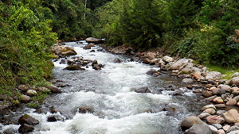
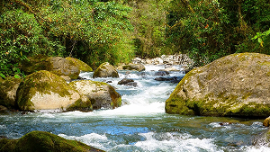
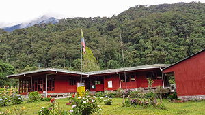

Descripcion
Ubicado en la cuenca del río Otún, este santuario es un paraíso para el avistamiento de aves, con especies como el gallito de roca y el tucán andino. Además, cuenta con senderos ecológicos rodeados de bosques andinos, ideales para caminatas y observación de fauna silvestre.

Descripcion
El Río Otún es vital para la biodiversidad de la región, ya que atraviesa varias áreas protegidas, incluyendo el Santuario de Fauna y Flora Otún Quimbaya. Este santuario es hogar de diversas especies de flora y fauna, y es un destino popular para actividades de ecoturismo como el senderismo y la observación de aves.

Descripcion
El Parque Regional Natural Ucumarí, está situado en la zona de amortiguamiento del Parque Nacional Natural Nevados, y su principal propósito es preservar la cuenca del río Otún, fuente de agua para las áreas urbanas de Pereira y Dosquebradas.